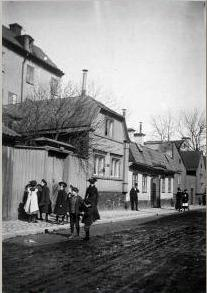
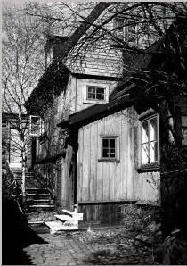
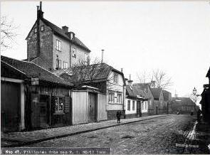
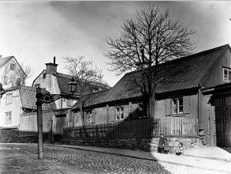
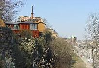
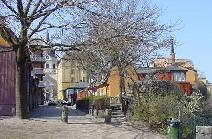
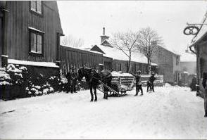
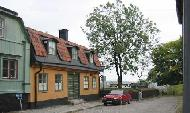
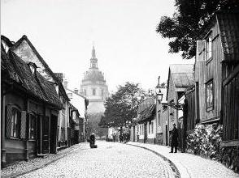

Södermalm i tid och rum
5. Mäster Mikaels Gata 3-5, Kv KlintenUr Ett berg vid vattnet, Per-Anders Fogelström, 1969
En del hus på norrsidan av Mäster Mikaels gata har försvunnit. Hittills har de bara fått lämna plats för en ovanligt trist och felplacerad parkeringsplats med vidhängande bensinstation - man hoppas att några andra räddade småhus småningom ska få flytta dit och läka det nu så fula såret.
Bland de försvunna husen vill man kanske särskilt minnas tröjvävargården, Mäster Mikaels gata 5, riven häromåret. Huset råkade ut för samma typ av "självsanering" som kåkarna vid Sandbacksgatan och som drabbat alltför många gamla lustiga hus: man tömmer kåken på folk och medan den står tom blir den ett tillhåll för uteliggare och åverkare av olika slag. Efter kort tid är huset sedan så förstört att inte ens den mest entusiastiske kulturvårdare kan yrka på dess bevarande och reparerande (metoden har ju också med stor framgång tilllämpats på Strindbergshuset vid Karlaplan).
Femman hade ett högt plank med inkörsport mot dåvarande Fjällgatan medan husens fasader (de var två) låg mot Högbergsgatan. Antagligen hade den äldsta delen byggts kort efter den stora branden i Katarina 1723 som ödelagt den tidigare bebyggelsen här. Senare byggde man om och byggde till.
|
 Fjällgatan 9-13, år 1900 Mäster Mikaels gata 9 Till vänster nr 9, i mitten nr 11, trähusen till höger nr 13. Bilden tagen från väster.
|
 Nr 9, gårdsmotiv |
Vid rivningen fann man, berättar Brita Englund (i "Föreningen Södermalms Meddelanden", 1962), många lager av såväl handmålade som tryckta tapeter varav en del från mitten av 1700-talet liksom en takmålning på papper.
Bland de tidigare ägarna av gården nämns en fiskare, en spannmålsmätare och en timmergesäll, bland de boende några matroser - närheten till hamnen och vattnen är märkbar. 1740 såldes gården till tröjvävaren Jacob Pihlman som inrättade sin lilla fabrik i ett hus på gården. I sin tjänst hade han en nockerska (som sydde ihop tröjorna), en spolflicka och två lärpojkar. Efter Pihlmans och hans hustrus död, de dog båda 1777, övertogs gården och fabriken av deras dotter som var gift med kofferdikaptenen Bengt Råberg och efter dem kom ytterligare några vävare innan det blev kryddkrämarnas tur att härska där.
På 1800-talet märks några kofferdikaptener till som ägare och hyresgäster tills den siste kaptenens änka gifter sig med bokhållaren utan fast anställning Johannes Misdorf (ibland även kallad Mistdorff ) som småningom tituleras grosshandlare. Misdorf var den siste private ägaren och bodde kvar i huset 1918 då det köptes av staden.
Sjökaptenerna var många här, liksom på hela Stigberget. Konstnären Georg Pauli berättar (intervjuad av Eveo i Sv.D. 1931) att "de hade sina roliga lusthus uppe i träden, och på söndagsförmiddagarna kunde man få se pigorna trava dit upp med toddyvirket, varpå gubbarna tillbringade sabbaten däruppe, tutande och betraktande sjöfarten på Strömmen genom sina långa tubkikare".


"Den för alla stockholmska sjökaptener gemensamma drömmen: ett eget hus på de Södra bergen med utsikt över farleden" (sagt av Lotten Dahlgren) medförde naturligtvis att sjökaptenerna träffas tätt här. Tyvärr var de nog dåliga dagboks- och brevskrivare, det finns inte mycket berättat om deras liv och hus på Stigberget.
Om en skeppare, "Gubben" Nylén, och hans gård i grannskapet, vid Stora Glasbruksgatan 10, har emellertid Lotten Dahlgren skrivit. Till huset hörde en trädgård med terrasser som klättrade på bergskanten, där växte syren- och bärbuskar och där fanns ett lusthus med flaggstång utanför. Utsikten var det finaste man kunde bjuda på - "den är och förblir, åtminstone i stockholmares ögon, den skönaste i världen". Och när kaptenen kom inseglande på sin Lübeck-båt "kunde befälhavaren från kommandobryggan med en enda blick omfatta den egna gården, där den låg som ett fågelrede, tryggt och gott, inkilad i sin bergsskreva, med solen glimmande i fönsterrutorna och vimpeln fladdrande från flaggstången, givande illusionen av en masttopp höjande sig över hustaket".
Hemma på gården "kunde man se dem lägga till och kasta loss, följa arbetet med lastning och lossning samt höra kaptenens dundrande kommandostämma när han riktigt var i tagen eka mot de Södra bergen". Nylén ligger som så många av hans yrkesbröder begravd på Katarina kyrkogård, "en begravningsplats som framför alla andra i huvudstaden är de 'hemförlovade' sjömännens".
7. Mäster Mikaels Gata 9, Kv Klinten
År 1730 fanns på tomten, liksom nu, två timrade byggnader som hade uppförts efter branden 1723. Vindarna inreddes 1774, husens inre reparerades 1852. Husen nedmonterades och återuppfördes med viss tillökning 1961.
|
|
År 1724 sålde hustru Margareta Elisabet Grönwall den avbrända tomten till myntbetjänten Iwar (Evert) Johansson. När mantalslängden upprättades år 1730 angavs att Johansson och dennes hustru Ebba Röding själva bebodde sin envåniga träbyggnad. Huset hade källare, två rum och vind samt täcktes av torvtak. På gården fanns en bagarstuga med en kammare och en vedbod. Förutom ägaren och hans hustru bodde ytterligare nio personer i gården.
När fastigheten besiktigades 1852 hade stora förändringar skett. Genomgripande "moderniseringar" hade utförts. Fastigheten har inkörsport och bodar och magasin efter Mäster Mikaels gata. Mot det nuvarande parkområdet - tidigare Högbergsgatans förlängning - ligger bod och bostadshus.

Fjällgatan 7-17, Mäster Mikaels gata, år 1908. Till vänster nr 7, Petterssons lumpaffär. Långa huset därefter nr 9. Höga huset bakom och vita huset mot gatan nr 11. De två första trähusen därefter nr 13. Trähuset med brutet tak nr 15. Huset längst bort nr 17. Bilden tagen från väster.

Mäster Mikaels gata från öster. Nr 17 till höger.
8.Mäster Mikaels Gata 11, Kv Klinten
Det hus som nu ligger efter Mäster Mikaels gata uppfördes som stall och vagnshus 1819. Huvudbyggnaden låg bakom detta hus mot Högbergsgatans förlängning.
Fastigheten inköptes 1874 av kommendören och riksdagsmannen Axel Adlersparre. Huvudbyggnaden rymde 7-8 rum fördelade på tre smala våningar. Det kallades allmänt för "Adlersparreska palatset".
Axel Adlersparre och hans maka, den kända författarinnan och kvinnosaksförespråkerskan "Esselde" - Fredrika Bremerförbundets initiativtagare - satte igång stora reparationer. Dessa blev klara våren 1875 och då hade också stallet och vagnshuset byggts om till bostad. "Adlersparreska palatset" revs 1909 för Katarinavägens framdragande. Det nu kvarvarande bostadshuset renoverades 1963 för stadsbyggnadsdirektören Göran Sidenbladh och erhöll då en modern glasad tillbyggnad, som dominerar intrycket från sjösidan. Tillbyggnaden väckte uppseende och kritiserades hårt.




Fjällgatan 15-19. Mäster Mikaels gata. Till vänster nr 15, i mitten nr 17, till höger men på samma sida av gatan nr 19. Bilden tagen från väster. Inget av husen finns kvar. Här ligger nu Cornelis park.

Mäster Mikaels gata 11

Bilden till höger lite längre upp i gatan. Den stora fastigheten vid Katarina Östra Kyrkogata är ej byggd ännu.
